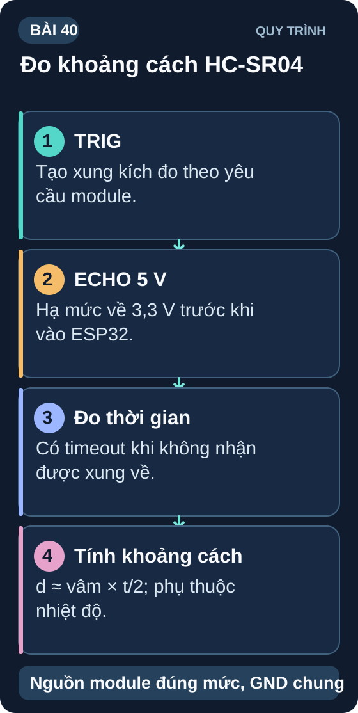
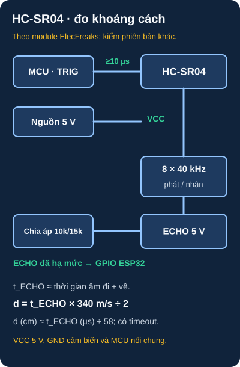

Cảm Biến Khoảng Cách — HC-SR04 & IR
Siêu âm và hồng ngoại — hai công nghệ cảm biến khoảng cách phổ biến nhất trong robot, tránh vật cản và đo mức chất lỏng.
- Hiểu nguyên lý đo khoảng cách siêu âm — TOF (Time of Flight)
- Kết nối và đọc HC-SR04 — TRIG/ECHO, tính khoảng cách từ thời gian
- Xử lý timeout khi không có vật thể — tránh treo chương trình
- Cảm biến IR SHARP GP2Y0A21 — analog output, phi tuyến, dùng lookup table
- VL53L0X — ToF laser I2C; tầm đo và sai số thay đổi theo mục tiêu, ánh sáng và chế độ
- So sánh: HC-SR04 vs IR analog vs VL53L0X — khi nào dùng
- Dự án robot tránh vật cản — HC-SR04 + L298N + servo quét góc
- Lọc nhiễu đọc khoảng cách: trung bình N mẫu, loại bỏ giá trị ngoại lệ

1. HC-SR04 — Đo khoảng cách bằng siêu âm

Đọc mô tả sơ đồ D40-1 bằng chữ
VCC của HC-SR04 ElecFreaks nhận 5 V và GND nối GND của MCU. MCU gửi xung TRIG mức cao ít nhất 10 µs; module phát tám xung 40 kHz rồi tạo xung ECHO có độ rộng tỷ lệ thời gian âm đi và về. ECHO loại 5 V không nối trực tiếp vào GPIO ESP32: mắc điện trở 10 kΩ từ ECHO đến GPIO, 15 kΩ từ GPIO xuống GND, cho khoảng 3 V khi ECHO ở 5 V. Khoảng cách bằng thời gian ECHO nhân tốc độ âm rồi chia hai; giá trị gần đúng bằng t (µs) chia 58 để ra cm khi lấy tốc độ âm 340 m/s. Đặt timeout để xử lý khi không có echo.
Ví dụ phân tích cho ElecFreaks HC-SR04 cấp 5 V và ESP32-WROOM-32 v3.8, bảng 13–14: ECHO 5 V không vào thẳng GPIO. Với rail 5 V trong khoảng 4,75–5,25 V và điện trở sai số 5%, cấu hình ECHO → 10 kΩ → nút RX → 15 kΩ → GND cho khoảng 2,74–3,28 V không tải; nút RX dự kiến tới GPIO19, TRIG từ GPIO18, GND chung. Trước khi lắp thật phải xác nhận model/revision của cả sensor và board, nguồn GPIO thực, pinout, mức ECHO/TRIG, điện trở và ngưỡng VIH/Vmax; nếu thiếu, chỉ dùng sơ đồ để tính hoặc mô phỏng. Espressif giới hạn GPIO 3,6 V.
// HC-SR04 với ESP32 — ECHO qua cầu chia áp 10kΩ/15kΩ
const int TRIG = 18, ECHO = 19;
const unsigned long TIMEOUT_US = 30000; // 30ms = ~5m max
float readDistance_cm() {
digitalWrite(TRIG, LOW); delayMicroseconds(2);
digitalWrite(TRIG, HIGH); delayMicroseconds(10);
digitalWrite(TRIG, LOW);
long duration = pulseIn(ECHO, HIGH, TIMEOUT_US);
if (duration == 0) return -1; // Timeout = không có vật
return duration / 58.0;
}
// Lọc nhiễu — trung bình 5 mẫu, bỏ min/max
float readDistanceFiltered() {
float vals[5];
int count = 0;
for (int attempt=0; attempt<10 && count<5; attempt++) {
float d = readDistance_cm();
if (d >= 2.0 && d <= 400.0) vals[count++] = d;
delay(60); // ElecFreaks khuyến nghị chu kỳ đo trên 60 ms để tránh echo cũ
}
if (count < 5) return -1; // không đủ mẫu hợp lệ
// Sắp xếp đơn giản (bubble sort 5 phần tử)
for (int i=0; i<4; i++)
for (int j=0; j<4-i; j++)
if (vals[j]>vals[j+1]) { float t=vals[j]; vals[j]=vals[j+1]; vals[j+1]=t; }
// Trung bình 3 giá trị giữa (bỏ min và max)
return (vals[1]+vals[2]+vals[3])/3.0;
}
void setup() {
Serial.begin(115200);
pinMode(TRIG, OUTPUT);
pinMode(ECHO, INPUT);
}
void loop() {
float d = readDistanceFiltered();
if (d < 0) Serial.println("Ngoai tam do");
else Serial.printf("Khoang cach: %.1f cm\n", d);
delay(100);
}
2. So sánh các loại cảm biến khoảng cách
| Loại | Dải đo | Độ chính xác | Giao tiếp | Nhược điểm |
|---|---|---|---|---|
| HC-SR04 (siêu âm) | 2–400cm theo tài liệu module | Có thể đạt 3 mm trong điều kiện phù hợp; không bảo đảm trên toàn dải | TRIG/ECHO digital | Không đo mặt mềm/góc lớn, nhiễu echo; xem ElecFreaks HC-SR04 |
| SHARP GP2Y (IR analog) | 10–80cm | ±5% | Analog ADC | Phi tuyến, bị ảnh hưởng bởi màu vật |
| VL53L0X (laser ToF) | Đến khoảng 2 m trong điều kiện mục tiêu/chế độ phù hợp | Không có một mức ±3 mm cho toàn dải; ST nêu sai số theo % và điều kiện đo | I2C | Kiểm độ phản xạ mục tiêu, ánh sáng môi trường và timing budget theo ST DS11555 v6.0, §6.2–6.3 |
| GP2Y0D21 (IR digital) | Fixed 10/20cm | ON/OFF | Digital | Chỉ phát hiện, không đo khoảng cách |
1: d = 1160µs / 58 = 20cm. Nhiệt độ ảnh hưởng: tốc độ âm v = 331.4 + 0.6×T°C (m/s). Ở 20°C: 343m/s → 34300cm/s → 29µs/cm. Ở 35°C: khoảng 352m/s → 28,4µs/cm cho quãng đường một chiều 1 cm. Hệ số hai chiều khoảng 56,8µs/cm, khác khoảng 2,6% so với 58,3µs/cm ở 20°C. Để chính xác: đọc nhiệt độ từ DHT22 và tính lại hệ số chia.
2: Pseudo-code: loop(): d=readDist(); if(d<20){ stop(); int bestAngle=-1; float maxDist=0; for(a=0;a<=180;a+=10){ servo.write(a); delay(50); float dd=readDist(); if(dd>maxDist){maxDist=dd;bestAngle=a;} } if(bestAngle<90)turnLeft(150); else turnRight(150); delay(400); } else forward(200);